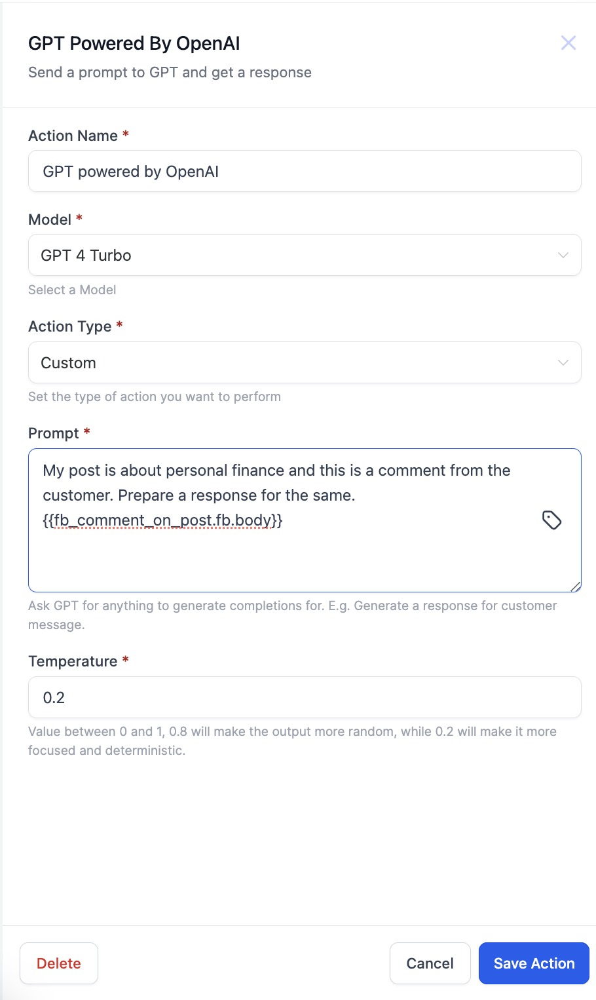
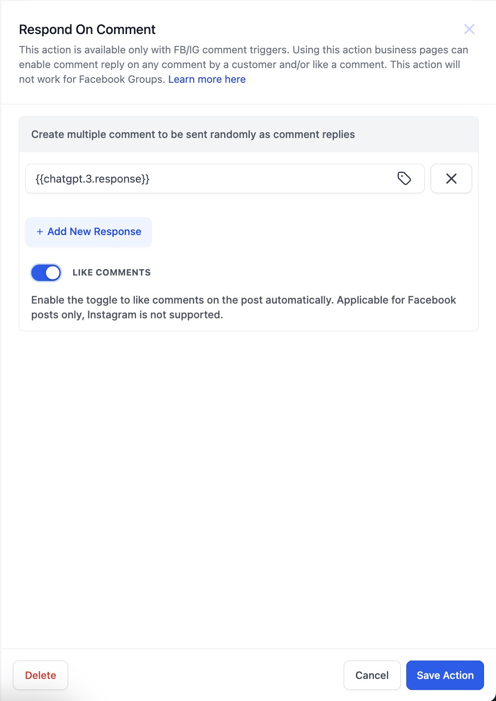

We have the "Respond on Comment" action. In this action you can enter multiple pre defined comment options but what if you want to tailor your comments based on the comment of the user. This is possible now using the GPT action.
How to use?
- Add a "GPT powered by OpenAI" action before the "Respond on comment" action. (Please make sure that Facebook - User comments on a post or Instagram - User comments on a post trigger is available).
- Select the Action Type as Custom and write the Prompt about how you want your response on the comment.
- From the custom value picker select the Facebook or Instagram Comment body and Save the action.
- Now add the "Respond on comment" action.
- In the response field from the custom value picker select the response from the GPT action.

